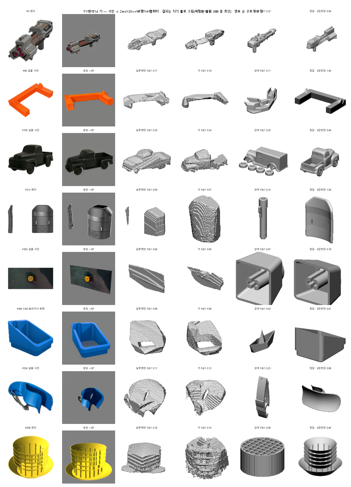

실험 m1_tr0214_h000_생성합치기
Zero123++ 생성 6 장을 장마다 실루엣 + 추정 깊이로 합치면 검색을 이기나?
판정 · G1 · G2 실패 · H0 기각 실패(유지)
분석
한 줄로
물음: 사진 한 장에서 큰 생성 모델(Zero123++)로 다른 시점 6 장을 만들고, 장마다 보이는 것(실루엣 · 추정 깊이)을 합치면 모양이 나오나? 검색을 이기나?
답: 못 이긴다(G1 실패 · 가 − 검색 −0.061 · p 0.0005 · G2 실패 · 가 0.112 대 6 장 천장 0.931 의 0.7 = 0.652). H0(「사진 한 장 → 다른 시점은 학습으로 원래 안 풀린다」)은 기각 실패(유지) — 미리 적은 규칙(tr211: 생성 모델 ≤ 검색 + 0.02 → 「큰 생성 모델도 검색 수준 → 문제 정의부터 다시」) 그대로. 기각 실패는 H0 이 맞다는 증명이 아니다: 이번 시험은 우리 데이터 학습 0 · 거친 처리였고, 교란(물체를 잘못 고름 · 추정 깊이가 오히려 깎음 · 원근 근사 · 검색 쪽 중복)은 판정을 바꾸지 않고 다음 시험 거리로 둔다.
정정(11-17 · 사용자 「h0 는 승인이야 기각이야?」): 첫 판에 「H0 은 가를 수 없음」 이라 쓴 것은 결과를 본 뒤 붙인 해석이었다(제 실수) — 판정은 미리 적은 규칙대로 「기각 실패」.
왜 이 판을 했나
tr212 · 213 에서 정확한 시점의 실루엣 + 깊이를 합치면 9 장 0.979(점 5 만 자)까지 간다는 걸 봤다. 사용자 원칙(11-16 · 11-17): 안 보이는 면은 통째로 추측하지 않고 장마다 보이는 것만 추론해 합친다 — 가(한 장 → 다른 시점 생성) · 나(받은 여러 장). 이 판은 가: 생성한 시점이 진짜 시점을 얼마나 대신하나(H0 을 이 구조로).
바꾼 것 하나
tr213 의 「6 장」 과 같은 배치(입력 기준 방위 +30 · 90 · 150 · 210 · 270 · 330 · 고도 20 · −10)의 정확한 시점 대신 Zero123++ v1.2 가 만든 6 장을 넣었다. 장마다 실루엣 = RMBG-1.4 마스크 · 깊이 = Depth Anything V2 S 상대 깊이를 「생성 6 장 실루엣 교집합의 앞면」 에 맞춤(정답 안 씀). 시점 규약은 자기 일관성(정답 없이)과 학습 쪽 모델로 정함. 자 = 점 5 만 F@1 %(완벽한 모양 1.0) · 결과가 사진 기준 틀이라 돌림 288 중 최선(검색 · 공도 같은 찾기).
결과

| 하드서페이스 132 장 · F@1 %(점 5 만) | 중앙 | 평균 | F@2 % 평균 |
|---|---|---|---|
| 가(생성 6 장 · 실루엣 + 추정 깊이) | 0.112 | 0.123 | 0.240 |
| 실루엣만(생성 6 장 교집합) | 0.121 | 0.145 | 0.278 |
| 검색(가장 닮은 학습 모델) | 0.138 | 0.184 | 0.312 |
| 공 | 0.039 | 0.047 | 0.093 |
| 6 장 천장(같은 배치 · 정답 시점) | 0.931 | 0.880 | 0.937 |
| 통과선 | 값 | 판정 |
|---|---|---|
| G1 가 − 검색 ≥ 0.05 · p < 0.05 | −0.061 · p 0.0005 | 실패 |
| G2 가 중앙 ≥ 0.7 × 6 장 천장 중앙(0.652) | 0.112 | 실패 |
종류별 가: 실물 사진 0.115 · 렌더 0.136 · 화면 0.137 · 일러스트 0.106(검색 0.188 · 0.178 · 0.184 · 0.122).
왜 이렇게 나왔나
확인한 것
- 추정 깊이가 오히려 깎는다: 실루엣만 0.145 > 가 0.123(평균) — 생성 그림의 상대 깊이를 거친 교집합 앞면에 맞추니 단차 · 홈은 사라지고(가보기_0 의 맞춘 깊이 = 매끈한 기울기) 틀린 깊이가 깎아 냄. 사용자 짚음: 「색상이나 단차 같은 것들이 안 보여서」.
- 물체를 잘못 고름: #15(상자 + 작은 받침 → 상자) · #313(물체 둘 → 둘 다) · #365(큰 판 위 작은 부품 → 판) — 배경 떼기가 가장 큰 덩어리를 잡음. 임의의 사진에서 「무엇을 만들지」 가 따로 필요.
- 검색 부풀림: #365 검색이 정답과 같은 모양(0.47) — 학습 나눔에 시험과 (거의) 같은 모델이 남아 있음.
- 눈으로는 닮은 결과(#86 · #195 · #482)도 F@1 % 는 0.08~0.24 — 표면이 거칠고 어긋나서.
짐작 (아직 확인 안 함)
- 원근(Zero123++ FOV 30°)을 정사영으로 근사한 오차 · 320² 해상도 · 6 장끼리 완전히 같은 물체가 아닌 생성 어긋남이 교집합에서 가장자리를 깎는다. 어느 것이 얼마인지는 「정답 6 장을 한 조건씩만 나쁘게(해상도 · 추정 깊이 · 원근)」 로 갈라야 안다.
한계
- 생성 씨앗 하나(앙상블 안 함) · 걸음 75 · 하드서페이스 132 장만.
- 규약을 처음 그림으로 잘못 읽어(방위 −1) 한 번 고침 — 고친 뒤로만 채점. 채점 전에 본 사진은 #0 · #15 두 장.
- 자를 tr213 까지의 점 1 만 개에서 5 만 개로 바꿈(완벽한 모양 0.80 → 1.0) — tr214 숫자는 tr210 ~ 213 숫자와 바로 비교하지 않는다.
- 검색 기준선에 시험과 같은 모델이 섞여 있음 — 중복을 걸러 다시 재야 공정함.
배운 것과 다음
가(생성 6 장 + 우리 처리)는 지금 검색을 못 이긴다 — 하지만 손실의 상당 부분이 생성 모델이 아니라 우리 처리(물체 고르기 · 깊이 · 카메라 근사)에 있어 보인다.
- 손실 가르기(학습 · 생성 없음): 정답 6 장을 한 조건씩만 나쁘게 — 320² 해상도 · Depth Anything 깊이 · 원근 → 정사영 · 어느 것이 천장(0.931)을 얼마나 깎나.
- 장마다 넘길 정보 더하기: 법선 · 모서리(색 경계 · 법선 꺾임) · 색 — 단차 · 홈을 살리려면(사용자 짚음).
- 물체 고르기: 가운데 · 가장 큰 · 사람이 찍은 물체 하나를 고르는 칸(① 앞).
- 검색 기준선 중복 거르기(시험과 거의 같은 학습 모델 빼기).
판 기록
- 통과선 커밋 f6e7c19(채점 전) · 코드
원화3d/실험_20261013/캐드부품/생성합치기214.py· 생성트레일/h0_zero123pp/생성.py(CharacterGen venv · 가중치트레일/h0_zero123pp/weights· git 밖) - 판정 원문
잼.json· 사진별out/설명/캐드부품/모델214/잼_사진별_*.json· 생성 그림out/설명/캐드부품/모델211/생성/(git 밖) - 그림:
비교.png·가보기_0.png(총 · 규약 고친 뒤) ·가보기_15.png(상자를 만든 예) ·부호보기.png(규약 맞추기 · 학습 쪽 모델)
추가 — 중복 거른 다시 읽기 (11-17 · 기준선208)
시험지 중복 거르기(학습 쪽 최근접 Oracle NN F@1 % ≥ 0.8 = 중복 · 돌리기 전 정함)로 하드서페이스 132 중 8 모델이 중복이었다(#269 · #333 · #364 · #365 · #446 · #556 · #563 · #589).
| 하드서페이스 · F@1 %(점 5 만) | 132 장(전체) | 124 장(중복 뺌) |
|---|---|---|
| 가 중앙 · 평균 | 0.112 · 0.123 | 0.111 · 0.123 |
| 검색 중앙 · 평균 | 0.138 · 0.184 | 0.130 · 0.154 |
| Oracle NN(학습 쪽 최선 · 상위 5 후보 근사) 중앙 · 평균 | 0.336 · 0.383 | 0.330 · 0.350 |
| 가 − 검색 평균 · p | −0.061 · 0.0005 | −0.031 · 0.0105 |
검색 부풀림은 가와의 차이의 절반쯤이었다. 빼고 읽어도 G1(가 − 검색 ≥ +0.05) 실패 · H0 기각 실패는 그대로다. 학습 쪽에서 가장 닮은 모델을 정답으로 알고 골라도(Oracle NN) 중앙 0.33 — 「있는 모델 고르기」 의 천장이다.